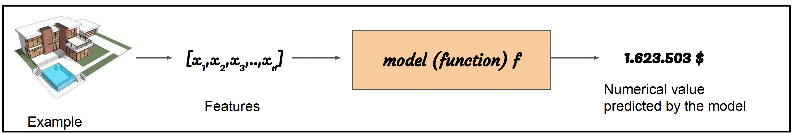
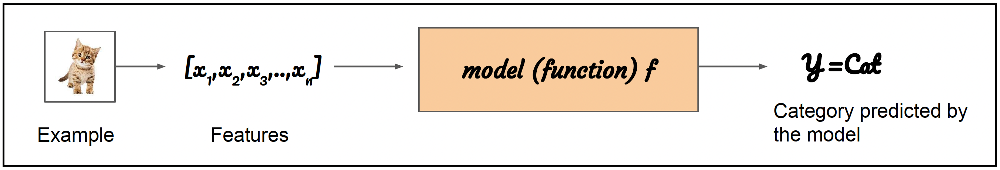
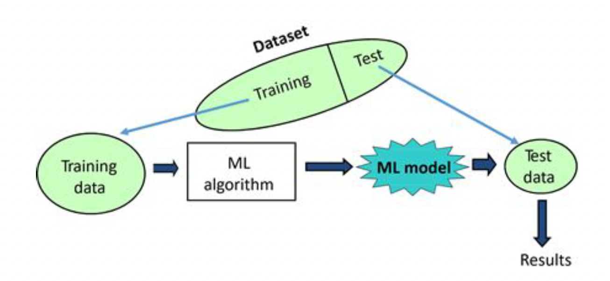
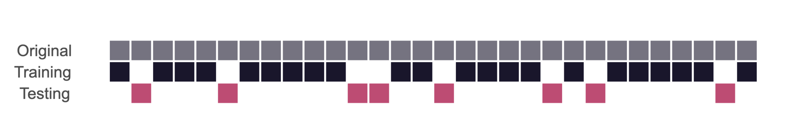

Introduction to Machine Learning with R and tidymodels
- Understand what Machine Learning (ML) is;
- Understand which modelling approaches to use for different kinds of data;
- Understand how
tidymodelscan help build and evaluate ML models.
What is Machine Learning
Machine Learning (ML) is the field of study that gives computers the ability to learn from data without being explicitly programmed
- An ML system is trained rather than explicitly programmed;
- Part of the broader field of Artificial Intelligence
- Also known as predictive modelling or statistical learning.
Learning by experience
We are never certain something will happen, but we usually know (or can estimate rather well) how likely it is to happen or, at least, what is most likely to happen, based on the experience we have acquired throughout our life.
Imagine you decide to play the violin. The first time you pick up a violin, you probably will struggle to make sounds that are pleasing, let alone to play anything. However, each successive time you practice your violin, you will get better and better. Eventually you will be able to produce good sounds, and with sufficient training you can play anything!
In machine learning, we use this same approach to train our models to solve problems.
Where can our models get experience?
To make make a model that performs well at solving a problem, we need to give it data that will be similar to what it will encounter when trying to solve the problem.
Specifically, we want a dataset with a target variable that we want to predict, and predictor variables that we will use to predict the target variable. Here’s two different examples:
| Problem | Target Variable | Predictor Variable |
|---|---|---|
| Predicting house prices | house sale price records | number of bedrooms |
| Classifying penguin species | penguin species | bill length |
What do we mean by learning?
Learning is our means of attaining the ability to perform automatically a task.
The main goal of the ML process is to find an algorithm \(f(x)\) that most accurately predicts future values \(y\) (or outcome) based on a set of inputs \(X\) (or predictors), where each entry \(x^{i}\) is a different feature:
- Features of an image are usually the values of the pixels in the image;
- We want to predict the price of an house on the basis of some characteristics (n° rooms, garden, position, floor, etc..) that are the features of each house predictors from which we learn.
Supervised ML
The dataset contains a series of inputs, based on which we are trying to predict a predifined outcome, which we know for the original data in the dataset. The outcome can be numerical (in which case the problem is called regression) or categorical (classification).
Regression:
Think of regression as predicting numbers (or divide the ties by length). You are asking to predict a numerical value given some input. For example:
Given the house features we want to predict the price. It is a pure numerical and unbounded value (at least positive unbounded);
Temperature of a city considering several factors (pulling, humidity, season,etc..);
To solve this task, the learning algorithm is asked to produce a function so that the model takes an example x as input and after some processing \(f(x)\) it returns a value y that can be any real value. 
Classification:
Think of classification as predicting a category (or divide the socks by color). For example:
Given a sentence (maybe a tweet) the system should determines if it express a positive or negative or neutral feeling;
Given an image where it can be a dog or a cat, we want to determine with the system which one is present;
To solve this task, the learning algorithm is usually asked to produce a function \(y= f(x)\)
So the model takes an example x as input and after some processing \(f(x)\) it returns a value y that is one of the categories the example x should belong to. 
Data splitting and spending
For machine learning, we typically split data into training and test sets:
- The training set is used to estimate model parameters;
- The test set is used to find an independent assessment of model performance.
Once we have built a ML model we might want to measure its performance, for example the accuracy in classification task (proportion of correct predicted examples) or the average error in a regression task. Our goal is to build a model that is able to really understand the task and that is able to generalize. For this reason we need to separate our dataset into training and testing sets.  The relative proportions of the training and testing set depend on the total of number of observations, and the variability observed in the data. The trade off to be considered is:
- if there is too much data in the training set, the assessment of the prediction error will be carried out on a very small test set, therefore we might find a model that fits the existing data very well, but generalizes very poorly;
- if there is too much data in the testing set, this means that we might not have enough data in the training set to accurately estimate the model parameters - so the model won’t be very accurate.
Some commonly used cutoffs include:
- 60% training / 40% testing
- 70% training / 30% testing
- 80% training / 20% testing 
Exploratory Data Analysis (EDA) with the Tidyverse
A hugely important part of any modeling approach is exploratory data analysis. In this course, we’ll be using tidyverse packages for getting to know your data, manipulating it, and visualizing it. The tidyverse is a collection of R packages designed for data science that share common APIs and an underlying philosophy. When you type library(tidyverse), what you’re doing is loading this collection of related packages for handling data using tidy data principles. These packages include ggplot2 for data visualization, and dplyr and tidyr for data manipulation and transformation. During this course, we’ll point out when we use functions from these different packages.
Visit this page to learn more about tidyverse: https://www.tidyverse.org/learn/
Machine Learning (ML) with Tidymodels
Tidymodels is a collection of R packages that provides a modern and consistent approach to building and validating machine learning models. Compared to older packages such as caret, tidymodels offers several benefits:
- it uses a consistent and intuitive syntax across all of its packages, which makes it easier to learn and use compared to the varied and sometimes complex syntax of older packages;
- it is built on top of the tidyverse (
dplyr,ggplot2), for a seamless data analysis workflow; - it includes a number of packages (
recipes,rsample) that provide tools for data preprocessing, making it easy to perform common data preprocessing tasks, such as feature engineering, and to integrate these tasks into the machine learning workflow; - it includes packages (
parsnip,tune) that provide a more flexible and modern approach to model tuning and selection. These packages allow for easy cross-validation, hyperparameter tuning, and model selection, and provide a more transparent and reproducible workflow; - it is actively developed and has a growing community of users and contributors. This means that there are many resources available for learning and troubleshooting, and that the packages are likely to continue to evolve and improve over time.
Overall, tidymodels offers a more modern and consistent approach to building and validating machine learning models, and provides a number of tools for data preprocessing, model tuning and selection, and workflow integration. These features make it a powerful and user-friendly tool.